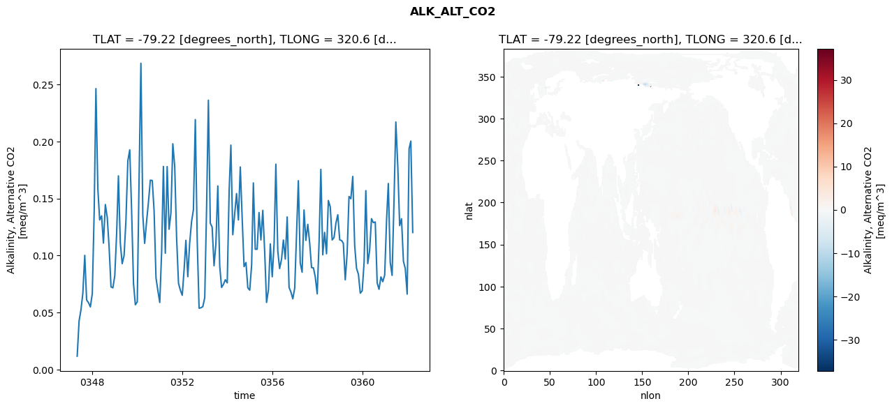
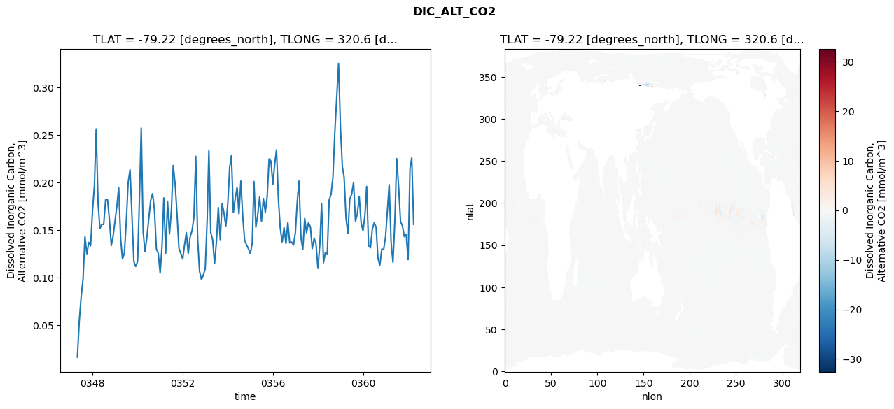
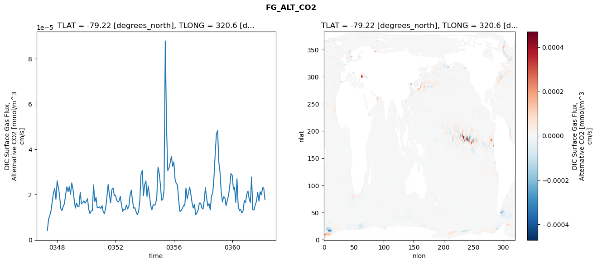
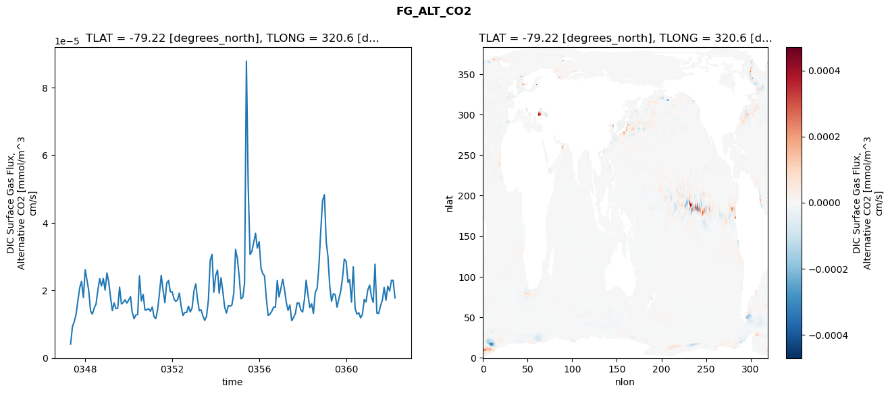
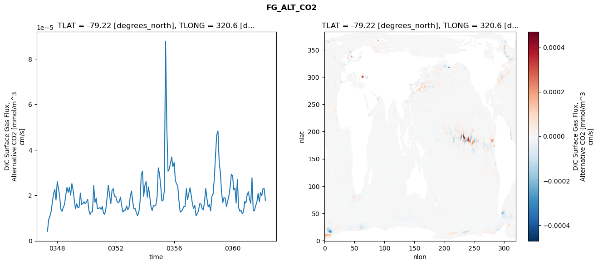

glb-dor_North_Atlantic_basin_031_1999-04-01_00125#
Simulation details#
Case: smyle.cdr-atlas-v0.glb-dor_North_Atlantic_basin_031_1999-04-01_00125.001
Basin: North_Atlantic_basin
Polygon: 31.0
Start date: 1999-04
Show code cell source Hide code cell source
import xarray as xr
import matplotlib.pyplot as plt
Show code cell source Hide code cell source
zarr_store = "/path/to/zarr/store"
# Parameters
zarr_store = "/global/cfs/projectdirs/m4746/Projects/Ocean-CDR-Atlas-v0/data/validation/smyle.cdr-atlas-v0.glb-dor_North_Atlantic_basin_031_1999-04-01_00125.001.validation.zarr"
Show code cell source Hide code cell source
%%time
ds_o = xr.open_zarr(zarr_store).compute()
ds_o
CPU times: user 603 ms, sys: 450 ms, total: 1.05 s
Wall time: 1.34 s
<xarray.Dataset> Size: 2MB
Dimensions: (nlat: 384, nlon: 320, time: 180)
Coordinates:
TLAT float64 8B -79.22
TLONG float64 8B 320.6
ULAT float64 8B -78.95
ULONG float64 8B 321.1
* time (time) object 1kB 0347-05-01 00:00:00 ... 0362-04-01 0...
z_t float32 4B 500.0
Dimensions without coordinates: nlat, nlon
Data variables:
ALK_ALT_CO2_diff (nlat, nlon) float32 492kB nan nan nan ... nan nan nan
ALK_ALT_CO2_rmse (time) float64 1kB 0.01182 0.04281 ... 0.2003 0.1202
DIC_ALT_CO2_diff (nlat, nlon) float32 492kB nan nan nan ... nan nan nan
DIC_ALT_CO2_rmse (time) float64 1kB 0.01628 0.05473 ... 0.2261 0.156
ECOSYS_IFRAC_diff (nlat, nlon) float32 492kB nan nan nan ... nan nan nan
ECOSYS_IFRAC_rmse (time) float64 1kB 0.0002263 0.0003533 ... 0.001313
FG_ALT_CO2_diff (nlat, nlon) float32 492kB nan nan nan ... nan nan nan
FG_ALT_CO2_rmse (time) float64 1kB 4.157e-06 9.305e-06 ... 1.779e-05xarray.Dataset
- nlat: 384
- nlon: 320
- time: 180
- TLAT()float64-79.22
- long_name :
- array of t-grid latitudes
- units :
- degrees_north
array(-79.22052261)
- TLONG()float64320.6
- long_name :
- array of t-grid longitudes
- units :
- degrees_east
array(320.56250892)
- ULAT()float64-78.95
- long_name :
- array of u-grid latitudes
- units :
- degrees_north
array(-78.95289509)
- ULONG()float64321.1
- long_name :
- array of u-grid longitudes
- units :
- degrees_east
array(321.12500894)
- time(time)object0347-05-01 00:00:00 ... 0362-04-...
- bounds :
- time_bound
- long_name :
- time
array([cftime.DatetimeNoLeap(347, 5, 1, 0, 0, 0, 0, has_year_zero=True), cftime.DatetimeNoLeap(347, 6, 1, 0, 0, 0, 0, has_year_zero=True), cftime.DatetimeNoLeap(347, 7, 1, 0, 0, 0, 0, has_year_zero=True), cftime.DatetimeNoLeap(347, 8, 1, 0, 0, 0, 0, has_year_zero=True), cftime.DatetimeNoLeap(347, 9, 1, 0, 0, 0, 0, has_year_zero=True), cftime.DatetimeNoLeap(347, 10, 1, 0, 0, 0, 0, has_year_zero=True), cftime.DatetimeNoLeap(347, 11, 1, 0, 0, 0, 0, has_year_zero=True), cftime.DatetimeNoLeap(347, 12, 1, 0, 0, 0, 0, has_year_zero=True), cftime.DatetimeNoLeap(348, 1, 1, 0, 0, 0, 0, has_year_zero=True), cftime.DatetimeNoLeap(348, 2, 1, 0, 0, 0, 0, has_year_zero=True), cftime.DatetimeNoLeap(348, 3, 1, 0, 0, 0, 0, has_year_zero=True), cftime.DatetimeNoLeap(348, 4, 1, 0, 0, 0, 0, has_year_zero=True), cftime.DatetimeNoLeap(348, 5, 1, 0, 0, 0, 0, has_year_zero=True), cftime.DatetimeNoLeap(348, 6, 1, 0, 0, 0, 0, has_year_zero=True), cftime.DatetimeNoLeap(348, 7, 1, 0, 0, 0, 0, has_year_zero=True), cftime.DatetimeNoLeap(348, 8, 1, 0, 0, 0, 0, has_year_zero=True), cftime.DatetimeNoLeap(348, 9, 1, 0, 0, 0, 0, has_year_zero=True), cftime.DatetimeNoLeap(348, 10, 1, 0, 0, 0, 0, has_year_zero=True), cftime.DatetimeNoLeap(348, 11, 1, 0, 0, 0, 0, has_year_zero=True), cftime.DatetimeNoLeap(348, 12, 1, 0, 0, 0, 0, has_year_zero=True), cftime.DatetimeNoLeap(349, 1, 1, 0, 0, 0, 0, has_year_zero=True), cftime.DatetimeNoLeap(349, 2, 1, 0, 0, 0, 0, has_year_zero=True), cftime.DatetimeNoLeap(349, 3, 1, 0, 0, 0, 0, has_year_zero=True), cftime.DatetimeNoLeap(349, 4, 1, 0, 0, 0, 0, has_year_zero=True), cftime.DatetimeNoLeap(349, 5, 1, 0, 0, 0, 0, has_year_zero=True), cftime.DatetimeNoLeap(349, 6, 1, 0, 0, 0, 0, has_year_zero=True), cftime.DatetimeNoLeap(349, 7, 1, 0, 0, 0, 0, has_year_zero=True), cftime.DatetimeNoLeap(349, 8, 1, 0, 0, 0, 0, has_year_zero=True), cftime.DatetimeNoLeap(349, 9, 1, 0, 0, 0, 0, has_year_zero=True), cftime.DatetimeNoLeap(349, 10, 1, 0, 0, 0, 0, has_year_zero=True), cftime.DatetimeNoLeap(349, 11, 1, 0, 0, 0, 0, has_year_zero=True), cftime.DatetimeNoLeap(349, 12, 1, 0, 0, 0, 0, has_year_zero=True), cftime.DatetimeNoLeap(350, 1, 1, 0, 0, 0, 0, has_year_zero=True), cftime.DatetimeNoLeap(350, 2, 1, 0, 0, 0, 0, has_year_zero=True), cftime.DatetimeNoLeap(350, 3, 1, 0, 0, 0, 0, has_year_zero=True), cftime.DatetimeNoLeap(350, 4, 1, 0, 0, 0, 0, has_year_zero=True), cftime.DatetimeNoLeap(350, 5, 1, 0, 0, 0, 0, has_year_zero=True), cftime.DatetimeNoLeap(350, 6, 1, 0, 0, 0, 0, has_year_zero=True), cftime.DatetimeNoLeap(350, 7, 1, 0, 0, 0, 0, has_year_zero=True), cftime.DatetimeNoLeap(350, 8, 1, 0, 0, 0, 0, has_year_zero=True), cftime.DatetimeNoLeap(350, 9, 1, 0, 0, 0, 0, has_year_zero=True), cftime.DatetimeNoLeap(350, 10, 1, 0, 0, 0, 0, has_year_zero=True), cftime.DatetimeNoLeap(350, 11, 1, 0, 0, 0, 0, has_year_zero=True), cftime.DatetimeNoLeap(350, 12, 1, 0, 0, 0, 0, has_year_zero=True), cftime.DatetimeNoLeap(351, 1, 1, 0, 0, 0, 0, has_year_zero=True), cftime.DatetimeNoLeap(351, 2, 1, 0, 0, 0, 0, has_year_zero=True), cftime.DatetimeNoLeap(351, 3, 1, 0, 0, 0, 0, has_year_zero=True), cftime.DatetimeNoLeap(351, 4, 1, 0, 0, 0, 0, has_year_zero=True), cftime.DatetimeNoLeap(351, 5, 1, 0, 0, 0, 0, has_year_zero=True), cftime.DatetimeNoLeap(351, 6, 1, 0, 0, 0, 0, has_year_zero=True), cftime.DatetimeNoLeap(351, 7, 1, 0, 0, 0, 0, has_year_zero=True), cftime.DatetimeNoLeap(351, 8, 1, 0, 0, 0, 0, has_year_zero=True), cftime.DatetimeNoLeap(351, 9, 1, 0, 0, 0, 0, has_year_zero=True), cftime.DatetimeNoLeap(351, 10, 1, 0, 0, 0, 0, has_year_zero=True), cftime.DatetimeNoLeap(351, 11, 1, 0, 0, 0, 0, has_year_zero=True), cftime.DatetimeNoLeap(351, 12, 1, 0, 0, 0, 0, has_year_zero=True), cftime.DatetimeNoLeap(352, 1, 1, 0, 0, 0, 0, has_year_zero=True), cftime.DatetimeNoLeap(352, 2, 1, 0, 0, 0, 0, has_year_zero=True), cftime.DatetimeNoLeap(352, 3, 1, 0, 0, 0, 0, has_year_zero=True), cftime.DatetimeNoLeap(352, 4, 1, 0, 0, 0, 0, has_year_zero=True), cftime.DatetimeNoLeap(352, 5, 1, 0, 0, 0, 0, has_year_zero=True), cftime.DatetimeNoLeap(352, 6, 1, 0, 0, 0, 0, has_year_zero=True), cftime.DatetimeNoLeap(352, 7, 1, 0, 0, 0, 0, has_year_zero=True), cftime.DatetimeNoLeap(352, 8, 1, 0, 0, 0, 0, has_year_zero=True), cftime.DatetimeNoLeap(352, 9, 1, 0, 0, 0, 0, has_year_zero=True), cftime.DatetimeNoLeap(352, 10, 1, 0, 0, 0, 0, has_year_zero=True), cftime.DatetimeNoLeap(352, 11, 1, 0, 0, 0, 0, has_year_zero=True), cftime.DatetimeNoLeap(352, 12, 1, 0, 0, 0, 0, has_year_zero=True), cftime.DatetimeNoLeap(353, 1, 1, 0, 0, 0, 0, has_year_zero=True), cftime.DatetimeNoLeap(353, 2, 1, 0, 0, 0, 0, has_year_zero=True), cftime.DatetimeNoLeap(353, 3, 1, 0, 0, 0, 0, has_year_zero=True), cftime.DatetimeNoLeap(353, 4, 1, 0, 0, 0, 0, has_year_zero=True), cftime.DatetimeNoLeap(353, 5, 1, 0, 0, 0, 0, has_year_zero=True), cftime.DatetimeNoLeap(353, 6, 1, 0, 0, 0, 0, has_year_zero=True), cftime.DatetimeNoLeap(353, 7, 1, 0, 0, 0, 0, has_year_zero=True), cftime.DatetimeNoLeap(353, 8, 1, 0, 0, 0, 0, has_year_zero=True), cftime.DatetimeNoLeap(353, 9, 1, 0, 0, 0, 0, has_year_zero=True), cftime.DatetimeNoLeap(353, 10, 1, 0, 0, 0, 0, has_year_zero=True), cftime.DatetimeNoLeap(353, 11, 1, 0, 0, 0, 0, has_year_zero=True), cftime.DatetimeNoLeap(353, 12, 1, 0, 0, 0, 0, has_year_zero=True), cftime.DatetimeNoLeap(354, 1, 1, 0, 0, 0, 0, has_year_zero=True), cftime.DatetimeNoLeap(354, 2, 1, 0, 0, 0, 0, has_year_zero=True), cftime.DatetimeNoLeap(354, 3, 1, 0, 0, 0, 0, has_year_zero=True), cftime.DatetimeNoLeap(354, 4, 1, 0, 0, 0, 0, has_year_zero=True), cftime.DatetimeNoLeap(354, 5, 1, 0, 0, 0, 0, has_year_zero=True), cftime.DatetimeNoLeap(354, 6, 1, 0, 0, 0, 0, has_year_zero=True), cftime.DatetimeNoLeap(354, 7, 1, 0, 0, 0, 0, has_year_zero=True), cftime.DatetimeNoLeap(354, 8, 1, 0, 0, 0, 0, has_year_zero=True), cftime.DatetimeNoLeap(354, 9, 1, 0, 0, 0, 0, has_year_zero=True), cftime.DatetimeNoLeap(354, 10, 1, 0, 0, 0, 0, has_year_zero=True), cftime.DatetimeNoLeap(354, 11, 1, 0, 0, 0, 0, has_year_zero=True), cftime.DatetimeNoLeap(354, 12, 1, 0, 0, 0, 0, has_year_zero=True), cftime.DatetimeNoLeap(355, 1, 1, 0, 0, 0, 0, has_year_zero=True), cftime.DatetimeNoLeap(355, 2, 1, 0, 0, 0, 0, has_year_zero=True), cftime.DatetimeNoLeap(355, 3, 1, 0, 0, 0, 0, has_year_zero=True), cftime.DatetimeNoLeap(355, 4, 1, 0, 0, 0, 0, has_year_zero=True), cftime.DatetimeNoLeap(355, 5, 1, 0, 0, 0, 0, has_year_zero=True), cftime.DatetimeNoLeap(355, 6, 1, 0, 0, 0, 0, has_year_zero=True), cftime.DatetimeNoLeap(355, 7, 1, 0, 0, 0, 0, has_year_zero=True), cftime.DatetimeNoLeap(355, 8, 1, 0, 0, 0, 0, has_year_zero=True), cftime.DatetimeNoLeap(355, 9, 1, 0, 0, 0, 0, has_year_zero=True), cftime.DatetimeNoLeap(355, 10, 1, 0, 0, 0, 0, has_year_zero=True), cftime.DatetimeNoLeap(355, 11, 1, 0, 0, 0, 0, has_year_zero=True), cftime.DatetimeNoLeap(355, 12, 1, 0, 0, 0, 0, has_year_zero=True), cftime.DatetimeNoLeap(356, 1, 1, 0, 0, 0, 0, has_year_zero=True), cftime.DatetimeNoLeap(356, 2, 1, 0, 0, 0, 0, has_year_zero=True), cftime.DatetimeNoLeap(356, 3, 1, 0, 0, 0, 0, has_year_zero=True), cftime.DatetimeNoLeap(356, 4, 1, 0, 0, 0, 0, has_year_zero=True), cftime.DatetimeNoLeap(356, 5, 1, 0, 0, 0, 0, has_year_zero=True), cftime.DatetimeNoLeap(356, 6, 1, 0, 0, 0, 0, has_year_zero=True), cftime.DatetimeNoLeap(356, 7, 1, 0, 0, 0, 0, has_year_zero=True), cftime.DatetimeNoLeap(356, 8, 1, 0, 0, 0, 0, has_year_zero=True), cftime.DatetimeNoLeap(356, 9, 1, 0, 0, 0, 0, has_year_zero=True), cftime.DatetimeNoLeap(356, 10, 1, 0, 0, 0, 0, has_year_zero=True), cftime.DatetimeNoLeap(356, 11, 1, 0, 0, 0, 0, has_year_zero=True), cftime.DatetimeNoLeap(356, 12, 1, 0, 0, 0, 0, has_year_zero=True), cftime.DatetimeNoLeap(357, 1, 1, 0, 0, 0, 0, has_year_zero=True), cftime.DatetimeNoLeap(357, 2, 1, 0, 0, 0, 0, has_year_zero=True), cftime.DatetimeNoLeap(357, 3, 1, 0, 0, 0, 0, has_year_zero=True), cftime.DatetimeNoLeap(357, 4, 1, 0, 0, 0, 0, has_year_zero=True), cftime.DatetimeNoLeap(357, 5, 1, 0, 0, 0, 0, has_year_zero=True), cftime.DatetimeNoLeap(357, 6, 1, 0, 0, 0, 0, has_year_zero=True), cftime.DatetimeNoLeap(357, 7, 1, 0, 0, 0, 0, has_year_zero=True), cftime.DatetimeNoLeap(357, 8, 1, 0, 0, 0, 0, has_year_zero=True), cftime.DatetimeNoLeap(357, 9, 1, 0, 0, 0, 0, has_year_zero=True), cftime.DatetimeNoLeap(357, 10, 1, 0, 0, 0, 0, has_year_zero=True), cftime.DatetimeNoLeap(357, 11, 1, 0, 0, 0, 0, has_year_zero=True), cftime.DatetimeNoLeap(357, 12, 1, 0, 0, 0, 0, has_year_zero=True), cftime.DatetimeNoLeap(358, 1, 1, 0, 0, 0, 0, has_year_zero=True), cftime.DatetimeNoLeap(358, 2, 1, 0, 0, 0, 0, has_year_zero=True), cftime.DatetimeNoLeap(358, 3, 1, 0, 0, 0, 0, has_year_zero=True), cftime.DatetimeNoLeap(358, 4, 1, 0, 0, 0, 0, has_year_zero=True), cftime.DatetimeNoLeap(358, 5, 1, 0, 0, 0, 0, has_year_zero=True), cftime.DatetimeNoLeap(358, 6, 1, 0, 0, 0, 0, has_year_zero=True), cftime.DatetimeNoLeap(358, 7, 1, 0, 0, 0, 0, has_year_zero=True), cftime.DatetimeNoLeap(358, 8, 1, 0, 0, 0, 0, has_year_zero=True), cftime.DatetimeNoLeap(358, 9, 1, 0, 0, 0, 0, has_year_zero=True), cftime.DatetimeNoLeap(358, 10, 1, 0, 0, 0, 0, has_year_zero=True), cftime.DatetimeNoLeap(358, 11, 1, 0, 0, 0, 0, has_year_zero=True), cftime.DatetimeNoLeap(358, 12, 1, 0, 0, 0, 0, has_year_zero=True), cftime.DatetimeNoLeap(359, 1, 1, 0, 0, 0, 0, has_year_zero=True), cftime.DatetimeNoLeap(359, 2, 1, 0, 0, 0, 0, has_year_zero=True), cftime.DatetimeNoLeap(359, 3, 1, 0, 0, 0, 0, has_year_zero=True), cftime.DatetimeNoLeap(359, 4, 1, 0, 0, 0, 0, has_year_zero=True), cftime.DatetimeNoLeap(359, 5, 1, 0, 0, 0, 0, has_year_zero=True), cftime.DatetimeNoLeap(359, 6, 1, 0, 0, 0, 0, has_year_zero=True), cftime.DatetimeNoLeap(359, 7, 1, 0, 0, 0, 0, has_year_zero=True), cftime.DatetimeNoLeap(359, 8, 1, 0, 0, 0, 0, has_year_zero=True), cftime.DatetimeNoLeap(359, 9, 1, 0, 0, 0, 0, has_year_zero=True), cftime.DatetimeNoLeap(359, 10, 1, 0, 0, 0, 0, has_year_zero=True), cftime.DatetimeNoLeap(359, 11, 1, 0, 0, 0, 0, has_year_zero=True), cftime.DatetimeNoLeap(359, 12, 1, 0, 0, 0, 0, has_year_zero=True), cftime.DatetimeNoLeap(360, 1, 1, 0, 0, 0, 0, has_year_zero=True), cftime.DatetimeNoLeap(360, 2, 1, 0, 0, 0, 0, has_year_zero=True), cftime.DatetimeNoLeap(360, 3, 1, 0, 0, 0, 0, has_year_zero=True), cftime.DatetimeNoLeap(360, 4, 1, 0, 0, 0, 0, has_year_zero=True), cftime.DatetimeNoLeap(360, 5, 1, 0, 0, 0, 0, has_year_zero=True), cftime.DatetimeNoLeap(360, 6, 1, 0, 0, 0, 0, has_year_zero=True), cftime.DatetimeNoLeap(360, 7, 1, 0, 0, 0, 0, has_year_zero=True), cftime.DatetimeNoLeap(360, 8, 1, 0, 0, 0, 0, has_year_zero=True), cftime.DatetimeNoLeap(360, 9, 1, 0, 0, 0, 0, has_year_zero=True), cftime.DatetimeNoLeap(360, 10, 1, 0, 0, 0, 0, has_year_zero=True), cftime.DatetimeNoLeap(360, 11, 1, 0, 0, 0, 0, has_year_zero=True), cftime.DatetimeNoLeap(360, 12, 1, 0, 0, 0, 0, has_year_zero=True), cftime.DatetimeNoLeap(361, 1, 1, 0, 0, 0, 0, has_year_zero=True), cftime.DatetimeNoLeap(361, 2, 1, 0, 0, 0, 0, has_year_zero=True), cftime.DatetimeNoLeap(361, 3, 1, 0, 0, 0, 0, has_year_zero=True), cftime.DatetimeNoLeap(361, 4, 1, 0, 0, 0, 0, has_year_zero=True), cftime.DatetimeNoLeap(361, 5, 1, 0, 0, 0, 0, has_year_zero=True), cftime.DatetimeNoLeap(361, 6, 1, 0, 0, 0, 0, has_year_zero=True), cftime.DatetimeNoLeap(361, 7, 1, 0, 0, 0, 0, has_year_zero=True), cftime.DatetimeNoLeap(361, 8, 1, 0, 0, 0, 0, has_year_zero=True), cftime.DatetimeNoLeap(361, 9, 1, 0, 0, 0, 0, has_year_zero=True), cftime.DatetimeNoLeap(361, 10, 1, 0, 0, 0, 0, has_year_zero=True), cftime.DatetimeNoLeap(361, 11, 1, 0, 0, 0, 0, has_year_zero=True), cftime.DatetimeNoLeap(361, 12, 1, 0, 0, 0, 0, has_year_zero=True), cftime.DatetimeNoLeap(362, 1, 1, 0, 0, 0, 0, has_year_zero=True), cftime.DatetimeNoLeap(362, 2, 1, 0, 0, 0, 0, has_year_zero=True), cftime.DatetimeNoLeap(362, 3, 1, 0, 0, 0, 0, has_year_zero=True), cftime.DatetimeNoLeap(362, 4, 1, 0, 0, 0, 0, has_year_zero=True)], dtype=object) - z_t()float32500.0
- long_name :
- depth from surface to midpoint of layer
- positive :
- down
- units :
- centimeters
- valid_max :
- 537500.0
- valid_min :
- 500.0
array(500., dtype=float32)
- ALK_ALT_CO2_diff(nlat, nlon)float32nan nan nan nan ... nan nan nan nan
- cell_methods :
- time: mean
- grid_loc :
- 3111
- long_name :
- Alkalinity, Alternative CO2
- units :
- meq/m^3
array([[ nan, nan, nan, ..., nan, nan, nan], [ nan, nan, nan, ..., nan, nan, nan], [-0.03417969, 0.00610352, 0.015625 , ..., nan, nan, nan], ..., [ nan, nan, nan, ..., nan, nan, nan], [ nan, nan, nan, ..., nan, nan, nan], [ nan, nan, nan, ..., nan, nan, nan]], dtype=float32) - ALK_ALT_CO2_rmse(time)float640.01182 0.04281 ... 0.2003 0.1202
- cell_methods :
- time: mean
- grid_loc :
- 3111
- long_name :
- Alkalinity, Alternative CO2
- units :
- meq/m^3
array([0.01181922, 0.04280699, 0.05229827, 0.06704643, 0.10018708, 0.06112144, 0.05866862, 0.05504679, 0.06655775, 0.13888563, 0.24627599, 0.15871505, 0.13121046, 0.13478341, 0.1109037 , 0.1447135 , 0.13336034, 0.10738219, 0.07254381, 0.0717317 , 0.08219356, 0.12027351, 0.16980153, 0.1110416 , 0.09289657, 0.09997162, 0.13052664, 0.18297443, 0.19264254, 0.13987892, 0.07554978, 0.05687624, 0.05946444, 0.17243971, 0.26848315, 0.13505691, 0.11068386, 0.12967081, 0.1466107 , 0.1660646 , 0.16575465, 0.13918737, 0.08035742, 0.06940218, 0.05891615, 0.10431417, 0.17809639, 0.10204836, 0.17795039, 0.12306078, 0.13718063, 0.19793294, 0.17776379, 0.11601502, 0.07576316, 0.06967894, 0.06519894, 0.08849214, 0.11332721, 0.08148451, 0.11075036, 0.12962425, 0.14015473, 0.21912806, 0.11279854, 0.05384376, 0.05429964, 0.05529891, 0.06308438, 0.14506231, 0.23611918, 0.12841246, 0.12490441, 0.09109518, 0.11040313, 0.16099047, 0.09095394, 0.07207353, 0.07486406, 0.07878742, 0.07609916, 0.15697105, 0.19675228, 0.11826762, 0.13587471, 0.1543378 , 0.13118066, 0.17759584, 0.13183435, 0.09029305, 0.09389178, 0.07173886, 0.06971156, 0.09178246, 0.16364279, 0.10552165, 0.10551313, 0.13773657, 0.11370615, 0.13959765, 0.10285109, 0.05893122, 0.07022697, 0.11021515, 0.08142343, 0.11117986, 0.18006625, 0.10418859, 0.08862203, 0.09669597, 0.11359437, 0.09694278, 0.13385029, 0.07211858, 0.06793652, 0.06209039, 0.07152022, 0.12068838, 0.16560209, 0.09335762, 0.08544781, 0.1399319 , 0.1132939 , 0.12733772, 0.11091582, 0.0894403 , 0.0892116 , 0.08107323, 0.06646336, 0.11278514, 0.1755161 , 0.10067515, 0.12030595, 0.10155851, 0.14822649, 0.14257544, 0.11368223, 0.11576495, 0.12855665, 0.13573638, 0.11373859, 0.11314203, 0.11075809, 0.07875949, 0.10138289, 0.15174549, 0.14978326, 0.16930995, 0.1087249 , 0.08887715, 0.08355326, 0.06704712, 0.06914171, 0.09409267, 0.15690541, 0.09296554, 0.10415938, 0.13231131, 0.12883632, 0.12940892, 0.07606831, 0.07045379, 0.08130115, 0.07710345, 0.08293463, 0.13165706, 0.16313842, 0.09401972, 0.08263542, 0.14733576, 0.21705448, 0.1789911 , 0.12626728, 0.13222109, 0.09506664, 0.0886509 , 0.06622474, 0.19360512, 0.20026008, 0.12017812]) - DIC_ALT_CO2_diff(nlat, nlon)float32nan nan nan nan ... nan nan nan nan
- cell_methods :
- time: mean
- grid_loc :
- 3111
- long_name :
- Dissolved Inorganic Carbon, Alternative CO2
- units :
- mmol/m^3
array([[ nan, nan, nan, ..., nan, nan, nan], [ nan, nan, nan, ..., nan, nan, nan], [-0.13793945, -0.0637207 , -0.02929688, ..., nan, nan, nan], ..., [ nan, nan, nan, ..., nan, nan, nan], [ nan, nan, nan, ..., nan, nan, nan], [ nan, nan, nan, ..., nan, nan, nan]], dtype=float32) - DIC_ALT_CO2_rmse(time)float640.01628 0.05473 ... 0.2261 0.156
- cell_methods :
- time: mean
- grid_loc :
- 3111
- long_name :
- Dissolved Inorganic Carbon, Alternative CO2
- units :
- mmol/m^3
array([0.0162789 , 0.05473399, 0.07966252, 0.09897757, 0.14293561, 0.12438978, 0.13706176, 0.13354169, 0.17032256, 0.19747598, 0.25648893, 0.17828925, 0.15153752, 0.15616815, 0.1559174 , 0.18193776, 0.18202553, 0.16159121, 0.13374782, 0.14409582, 0.16010523, 0.17608258, 0.19506199, 0.14117073, 0.11953707, 0.12592006, 0.15833461, 0.20011716, 0.21351411, 0.1663824 , 0.11689698, 0.11166392, 0.11706504, 0.18657724, 0.25742118, 0.14777551, 0.12732415, 0.14265152, 0.162224 , 0.18142193, 0.18839558, 0.17086987, 0.12999016, 0.12576959, 0.10469658, 0.13381012, 0.18387101, 0.12568455, 0.18039575, 0.14601518, 0.17011119, 0.21810174, 0.198171 , 0.16730085, 0.13080656, 0.12527398, 0.11955671, 0.13488839, 0.14733681, 0.12539228, 0.1428557 , 0.1493863 , 0.16325263, 0.2277057 , 0.13951618, 0.10644405, 0.0979748 , 0.10248888, 0.10930179, 0.16046054, 0.23354594, 0.14737006, 0.13966214, 0.11460166, 0.1374738 , 0.17372377, 0.13999932, 0.1779925 , 0.16797197, 0.15430193, 0.17744345, 0.21606374, 0.22888456, 0.16837378, 0.18303639, 0.19504112, 0.16715585, 0.20166391, 0.16387563, 0.13971355, 0.13425847, 0.13044253, 0.125199 , 0.13620533, 0.20117908, 0.15318343, 0.16601615, 0.18501515, 0.15930952, 0.18320509, 0.16879973, 0.18513124, 0.22498749, 0.22271108, 0.19810465, 0.22037304, 0.23452368, 0.18248269, 0.15217888, 0.13760646, 0.15262349, 0.13578304, 0.15812655, 0.13655703, 0.13742973, 0.134206 , 0.14744567, 0.18102817, 0.20163445, 0.14212951, 0.12972259, 0.16234821, 0.14725607, 0.15783035, 0.15343354, 0.13052655, 0.14156093, 0.13537146, 0.10966592, 0.13489928, 0.17819996, 0.11557877, 0.12658296, 0.12425446, 0.18163807, 0.18751808, 0.20576804, 0.25242675, 0.28963472, 0.32553242, 0.25777377, 0.21667542, 0.20550279, 0.16238159, 0.14678665, 0.18264329, 0.18757603, 0.20040435, 0.15939612, 0.16715183, 0.18533558, 0.15796915, 0.14916035, 0.16555896, 0.19601788, 0.13365095, 0.13134519, 0.15122272, 0.15770133, 0.15310814, 0.11997238, 0.11315563, 0.13016423, 0.12930994, 0.14284158, 0.17143271, 0.19792011, 0.1369239 , 0.11606533, 0.16060717, 0.22525459, 0.19561748, 0.15873429, 0.15470932, 0.14310648, 0.14582262, 0.11885029, 0.21491563, 0.22608827, 0.15604768]) - ECOSYS_IFRAC_diff(nlat, nlon)float32nan nan nan nan ... nan nan nan nan
- cell_methods :
- time: mean
- grid_loc :
- 2110
- long_name :
- Ice Fraction for ecosys fluxes
- units :
- fraction
array([[ nan, nan, nan, ..., nan, nan, nan], [ nan, nan, nan, ..., nan, nan, nan], [ 0.00082153, -0.00081438, -0.00112158, ..., nan, nan, nan], ..., [ nan, nan, nan, ..., nan, nan, nan], [ nan, nan, nan, ..., nan, nan, nan], [ nan, nan, nan, ..., nan, nan, nan]], dtype=float32) - ECOSYS_IFRAC_rmse(time)float640.0002263 0.0003533 ... 0.001313
- cell_methods :
- time: mean
- grid_loc :
- 2110
- long_name :
- Ice Fraction for ecosys fluxes
- units :
- fraction
array([0.00022627, 0.00035325, 0.00047756, 0.00079383, 0.00070392, 0.00043221, 0.00044489, 0.0004142 , 0.00137334, 0.00195169, 0.00037264, 0.00050799, 0.00055607, 0.00044687, 0.00038756, 0.00073362, 0.0010274 , 0.00052084, 0.00051122, 0.00049385, 0.00072886, 0.00080779, 0.00065307, 0.00061229, 0.00039648, 0.00035772, 0.00044863, 0.00068503, 0.00057396, 0.00041991, 0.00036311, 0.00030336, 0.00049058, 0.00081734, 0.00043157, 0.00050912, 0.00040792, 0.00035662, 0.00049594, 0.00098608, 0.00060313, 0.00043331, 0.00061359, 0.00045831, 0.00042107, 0.00078102, 0.00093286, 0.00113191, 0.00047254, 0.00032985, 0.00043477, 0.00077743, 0.0006098 , 0.00050858, 0.00050609, 0.00040818, 0.00075052, 0.00077188, 0.00069912, 0.0005494 , 0.00033847, 0.00029933, 0.00039556, 0.00076047, 0.00080852, 0.00061031, 0.00051315, 0.00037598, 0.00124147, 0.00170474, 0.00051426, 0.00038327, 0.0004536 , 0.00090026, 0.00051175, 0.00063142, 0.00051901, 0.0004353 , 0.00048521, 0.00048624, 0.00049627, 0.00080518, 0.00094878, 0.00055049, 0.00049232, 0.00045417, 0.00080961, 0.00062042, 0.00060934, 0.00063066, 0.00037969, 0.00039176, 0.00044635, 0.00095963, 0.00069095, 0.00041559, 0.00043693, 0.000435 , 0.00045552, 0.00064566, 0.00061429, 0.000672 , 0.00032981, 0.00040856, 0.00076437, 0.00114309, 0.00133775, 0.00079099, 0.00039474, 0.00051679, 0.00051983, 0.0008572 , 0.00055618, 0.00048767, 0.00044859, 0.0005436 , 0.0004627 , 0.00065831, 0.0005885 , 0.00041123, 0.00039145, 0.0004257 , 0.00047008, 0.00066697, 0.00051029, 0.00052512, 0.00048661, 0.00039368, 0.00046807, 0.00064216, 0.00051671, 0.00044177, 0.00034022, 0.00037698, 0.00063748, 0.00078373, 0.00037258, 0.00036862, 0.00041103, 0.00037083, 0.0003204 , 0.00059682, 0.00054277, 0.00038926, 0.00049835, 0.00040367, 0.00041758, 0.00088174, 0.00040582, 0.0004316 , 0.00038857, 0.00050239, 0.00031514, 0.00050495, 0.00029153, 0.00036853, 0.00039733, 0.00041902, 0.00057465, 0.00089309, 0.00034973, 0.0003997 , 0.00043167, 0.00049071, 0.00083638, 0.0010806 , 0.00119239, 0.00084317, 0.00045262, 0.0003317 , 0.00035927, 0.00090403, 0.00105943, 0.00108946, 0.00044189, 0.00040209, 0.00060841, 0.00169571, 0.00178979, 0.00131294]) - FG_ALT_CO2_diff(nlat, nlon)float32nan nan nan nan ... nan nan nan nan
- cell_methods :
- time: mean
- grid_loc :
- 2110
- long_name :
- DIC Surface Gas Flux, Alternative CO2
- units :
- mmol/m^3 cm/s
array([[ nan, nan, nan, ..., nan, nan, nan], [ nan, nan, nan, ..., nan, nan, nan], [5.7806028e-07, 5.2672403e-06, 6.7586079e-06, ..., nan, nan, nan], ..., [ nan, nan, nan, ..., nan, nan, nan], [ nan, nan, nan, ..., nan, nan, nan], [ nan, nan, nan, ..., nan, nan, nan]], dtype=float32) - FG_ALT_CO2_rmse(time)float644.157e-06 9.305e-06 ... 1.779e-05
- cell_methods :
- time: mean
- grid_loc :
- 2110
- long_name :
- DIC Surface Gas Flux, Alternative CO2
- units :
- mmol/m^3 cm/s
array([4.15667287e-06, 9.30527267e-06, 1.07331983e-05, 1.29343949e-05, 1.70643898e-05, 2.07646324e-05, 2.26919295e-05, 1.78866015e-05, 2.61127638e-05, 2.29391574e-05, 1.99737556e-05, 1.39186656e-05, 1.29749940e-05, 1.47797389e-05, 1.59080233e-05, 1.99598768e-05, 2.34871585e-05, 2.13031233e-05, 2.35160454e-05, 2.00924642e-05, 2.51633262e-05, 2.23932229e-05, 1.81192209e-05, 1.40118989e-05, 1.63095009e-05, 1.46146482e-05, 1.47452410e-05, 2.09845967e-05, 1.59827092e-05, 1.64075821e-05, 1.72173579e-05, 1.62569265e-05, 1.71305588e-05, 1.82023087e-05, 1.35390044e-05, 1.16207347e-05, 1.27196870e-05, 1.28882939e-05, 2.43163807e-05, 1.69024204e-05, 1.87936559e-05, 1.42088195e-05, 1.42778934e-05, 1.46246044e-05, 1.38311311e-05, 1.51231530e-05, 1.22352231e-05, 1.16480317e-05, 1.41764199e-05, 1.91327814e-05, 2.44581929e-05, 2.01273032e-05, 1.63561147e-05, 2.21587019e-05, 2.29274520e-05, 1.95730463e-05, 1.96129220e-05, 1.74810317e-05, 1.67613413e-05, 1.71865050e-05, 1.92183208e-05, 1.52741603e-05, 1.25882949e-05, 1.34982683e-05, 1.34729365e-05, 1.53419626e-05, 1.36438009e-05, 1.47937683e-05, 1.97594156e-05, 2.19559612e-05, 1.74447568e-05, 1.39757311e-05, 1.42540995e-05, 1.23980062e-05, 1.11061483e-05, 1.23825093e-05, 1.71515252e-05, 2.88844586e-05, 3.06876316e-05, 1.94786067e-05, ... 3.15667193e-05, 3.41115326e-05, 3.69004052e-05, 3.25339854e-05, 3.44209856e-05, 2.66063633e-05, 2.50386603e-05, 2.42754708e-05, 1.77316796e-05, 1.26020945e-05, 1.29963674e-05, 1.38258331e-05, 1.51001855e-05, 1.50398948e-05, 2.29366408e-05, 1.80744991e-05, 2.06184189e-05, 2.33046720e-05, 2.04285105e-05, 1.64823846e-05, 1.40964944e-05, 1.56850711e-05, 1.10421787e-05, 1.19756841e-05, 1.31661886e-05, 1.63129815e-05, 1.62467926e-05, 1.42192880e-05, 1.36066031e-05, 1.74796300e-05, 2.30095834e-05, 1.85940981e-05, 1.49482999e-05, 1.60216669e-05, 1.31902001e-05, 1.94770834e-05, 2.05578466e-05, 2.72423793e-05, 3.77098339e-05, 4.65643758e-05, 4.83229892e-05, 3.43323188e-05, 3.01394058e-05, 2.12681260e-05, 1.67972585e-05, 1.90270162e-05, 1.87491566e-05, 1.50499446e-05, 1.74786121e-05, 1.96943457e-05, 2.36820817e-05, 2.92645839e-05, 2.86020588e-05, 2.23524327e-05, 2.32380335e-05, 1.65414418e-05, 2.70040840e-05, 1.46220409e-05, 1.29994974e-05, 1.34154943e-05, 1.18671905e-05, 1.28792919e-05, 1.73334589e-05, 1.65823970e-05, 2.02553722e-05, 2.15663798e-05, 1.82022052e-05, 1.64521956e-05, 2.77636191e-05, 1.33161301e-05, 1.31772202e-05, 1.54019889e-05, 1.71100823e-05, 2.09091363e-05, 1.70835647e-05, 2.12467140e-05, 1.98369878e-05, 2.29833860e-05, 2.29704271e-05, 1.77864587e-05])
- timePandasIndex
PandasIndex(CFTimeIndex([0347-05-01 00:00:00, 0347-06-01 00:00:00, 0347-07-01 00:00:00, 0347-08-01 00:00:00, 0347-09-01 00:00:00, 0347-10-01 00:00:00, 0347-11-01 00:00:00, 0347-12-01 00:00:00, 0348-01-01 00:00:00, 0348-02-01 00:00:00, ... 0361-07-01 00:00:00, 0361-08-01 00:00:00, 0361-09-01 00:00:00, 0361-10-01 00:00:00, 0361-11-01 00:00:00, 0361-12-01 00:00:00, 0362-01-01 00:00:00, 0362-02-01 00:00:00, 0362-03-01 00:00:00, 0362-04-01 00:00:00], dtype='object', length=180, calendar='noleap', freq='MS'))
Show code cell source Hide code cell source
variables = [v[:-5] for v in ds_o.variables if "_rmse" in v]
Show code cell source Hide code cell source
plt.rcParams.update({'figure.max_open_warning': 0})
for v in variables:
fig, axs = plt.subplots(1, 2, figsize=(15, 6))
ds_o[f"{v}_rmse"].plot(ax=axs[0])
ds_o[f"{v}_diff"].plot(ax=axs[1])
plt.suptitle(v, fontweight="bold")


 

